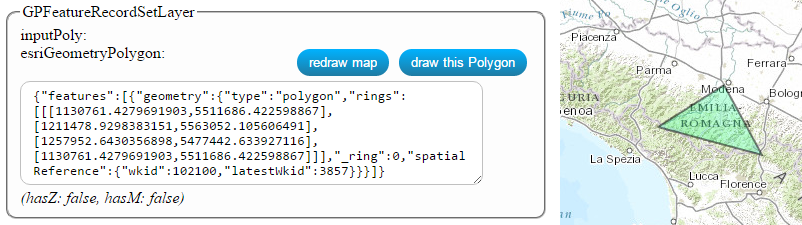

If you retrieve a task that requests a GPFeatureRecordSet parameter, the application
prepares a simple interface for allowing to you to define this parameter.
In this case, you can define the parameter writing the feature on the textbox and later, if you want,
request to draw on the map the associated geometry using the "redraw map" button.

Otherwise, you can push the "draw" button and, using the mouse, draw the feature on the map.
When you are done drawing, the application inserts the related feature on the textbox, like the example image.